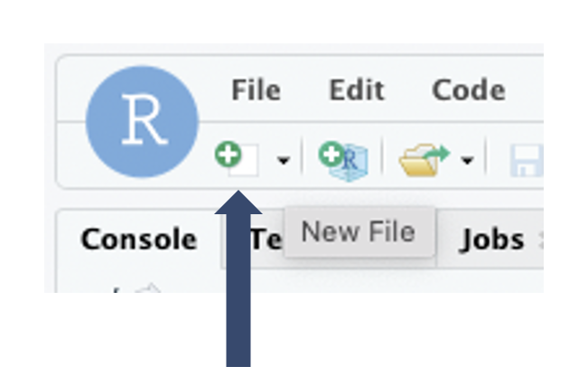
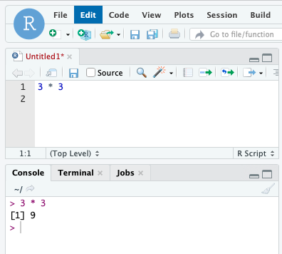
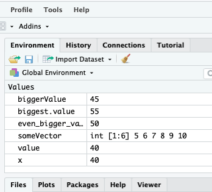
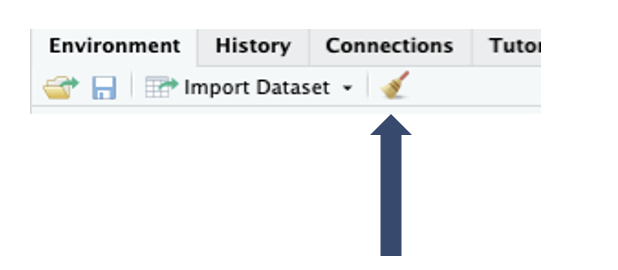

R Basics
New R script
Now we will create an R script. R commands can be entered into the console, but saving these commands in a script will allow us to rerun these commands at a later date. To create an R script we will need to either:
- Go to
File > New File > R script - Click the
New Fileicon and select R script

Running R Code
When running R code you have a few options:
Running One Line/Chunk:
-
Put your cursor at the beginning of the line of code and hit
Ctrl + Enteron Windows or ⌘ +Enteron MacOSX. -
Highlight the line/chunk of code and hit
Ctrl + Enteror ⌘ +Enter.
Running The Entire Script:
- Clicking
Sourceat the top of the script window.
Calculations
Let's try running some R code! R can be used to run all sorts of calculations just like a calculator:

You will notice that we ran this code in the script window but you can see the output in the console. When we work with calculations it is useful to remember the order of operations - here are their equivalents in R:
- Parentheses:
(,) - Exponents:
^or** - Multiply:
* - Divide:
/ - Add:
+ - Subtract:
-
Let's look at some examples:
10 * 3^3
output
[1] 270
(400 / 10) * (4e2) # 4e2 is the same as 4^2
output
[1] 16000
You'll notice that in the last equation we added words after a # and the equation still ran. This is what is known as a comment, where everything after the # is not registered as R code. Commenting is immensely valuable for giving your code context so that you and whoever else reads it knows the purpose of a given chunk of code.
Additionally there are functions built in R to perform mathematical calculations:
abs(10) # absolute value
output
[1] 10
sqrt(25) # square root
output
[1] 5
log(10) # natural logarithm
output
[1] 2.302585
log10(10) # log base 10
output
[1] 1
Comparisons
R can also be used to make comparisons. Here we note the operators used to do so:
- Equals:
== - Does Not Equal:
!= - Less Than Or Equal
<= - Greater Than Or Equal
>= - Greater Than
> - Less Than
<
2 == 2
output
[1] TRUE
2 != 2
output
[1] FALSE
3 <= 10
output
[1] TRUE
Note
Unless the number is an integer, do not use == to compare. This is due to the fact that the decimal value may appear the same in R but from a machine level the two values can be very different.
Variables & Vectors
Dealing with values can be cumbersome. In R, values can be assigned to words using the <- operator:
x <- 35 # assigning a value of 35
x
output
[1] 35
x <- 40 # changing value to 40
x
output
[1] 40
You'll notice that we initially assigned x to a value of 35 and then updated value to 40. This is important to keep in mind because the last value assigned to x will be kept. Variables can I have a combination lowercase letters, uppercase letters, underscores and periods:
value <- 40
biggerValue <- 45
even_bigger_value <- 50
biggest.value <- 55
value
biggerValue
even_bigger_value
biggest.value
output
[1] 40
[1] 45
[1] 50
[1] 55
Note
Take note that the spelling needs to be consistent to call the variable correctly.
We can also assign a series of values in a specific order to a variable to create what is called a vector:
someVector <- 5:10
someVector
output
[1] 5 6 7 8 9 10
Selecting Vector Elements
When we assign values to a vector we can select certain elements
Environment
As you may have noticed we have been assigning variables and they have been added to your Environment window:

If you would like to declutter your environment, you have a few options:
- You can use the
rm()function to remove which ever variables you'd like. To remove more than one just put a comma between variable names. - You can clear all variables by clicking the broom icon:

Warning
Be careful when removing variables, especially if these values took a long time to generate!
R Packages
Aside from the base functions there are thousands of custom fuctions which are bundled in R packages. We can access these functions by loading the package that contains them. To load a package you can use the library() function:
library(dplyr)
However, sometimes, a function has the same name as a function in another package. This can create conflicts if you load both packages. To resolve this it is often desirable to specify where your function comes from with the :: symbol. For example, the select() function through dplyr is a common name for a function. We can specify that we want the select() function in dplyr with:
dplyr::select()